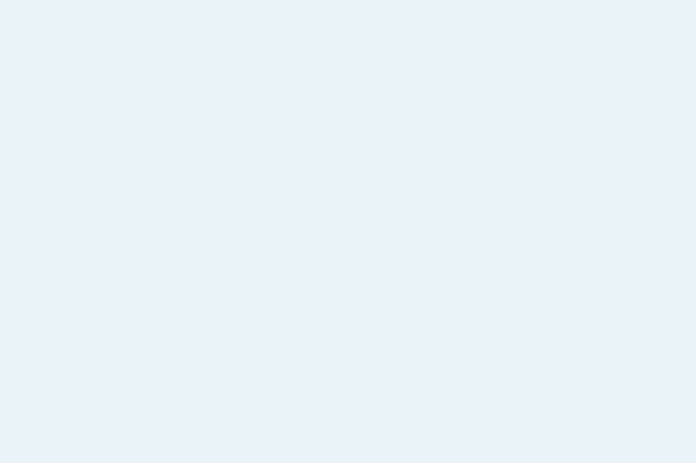

Prevenção
Avaliação da saúde bucal e orientações de higiene e prevenção conforme cada pessoa.
- Tempo
- O tempo depende da avaliação e dos procedimentos necessários.
- Sessões
- A frequência de acompanhamento é combinada em consulta.
 Recepção odontológica com plantas e tons neutros
Recepção odontológica com plantas e tons neutrosA equipe explica o que será feito e conversa sobre suas dúvidas antes de começar. Atendimento no bairro Funcionários, em Belo Horizonte.
Agendar avaliaçãoCRO-MG 00.000
Avaliação da saúde bucal e orientações de higiene e prevenção conforme cada pessoa.
A primeira conversa serve para ouvir sua queixa e entender seu histórico. A avaliação pode incluir exame clínico e exames complementares, conforme a necessidade.
A equipe registra a queixa, o histórico de saúde e suas dúvidas.
A dentista examina a saúde bucal e solicita exames se forem necessários.
Você recebe explicações sobre as possibilidades e os próximos passos antes de decidir.
Se houver necessidade de tratamento, a equipe explica como organizar as próximas sessões.
As possibilidades de cuidado são definidas depois de avaliação individual.


Leve documento com foto, exames recentes relacionados à queixa e uma lista dos medicamentos que usa.
Sim. Marque o horário e informe a idade da criança para organizarmos o atendimento.
Pode. Envie seu nome, o motivo da consulta e os períodos em que consegue vir.
Ligue para a clínica e explique a situação. A equipe verifica a disponibilidade e orienta o próximo passo.
Rua Ceará, 1.185, Funcionários, Belo Horizonte - MG
Seg a qui: 9h às 18h | Sex: 9h às 16h